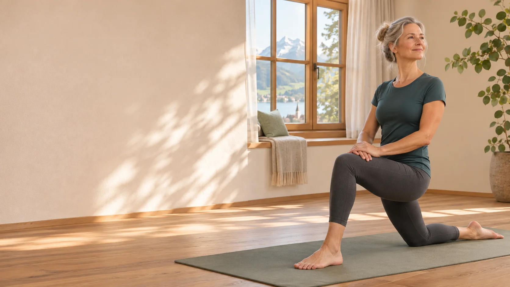

Start the day moving
Stretch gently when you get up. Move your shoulders and arms at a comfortable pace.

A little movement. Every day. Just for you.
Movement need not be complicated. Small active moments can make a difference, without pressure to perform. Find what suits your everyday life.
Back to homeRegular activity supports your heart, muscles, balance, mobility and wellbeing. Even short active breaks count.
Stretch gently when you get up. Move your shoulders and arms at a comfortable pace.

Stand up regularly, take a few steps or relax your shoulders.

Use short journeys for a walk at your own pace.

Move your joints slowly and without forcing the movement.

Stand briefly on one leg, holding a stable surface if needed.

Dance, swim, cycle or take a walk. Pick something you like.
Strength, balance and regular walking can support everyday independence. Start with safe, simple movements and build up gradually.
As a general guide, WHO recommends that adults do 150–300 minutes of moderate activity or 75–150 minutes of vigorous activity per week, plus muscle-strengthening activities on at least two days. For older adults, balance and functional strength activities on at least three days are also beneficial. Some movement is better than none.
Choose your exercises, set your intervals and track your personal training time. Your pace. Your exercises. Your time.
Explore PhysioClockNote: This is general wellbeing information, not medical advice. Work within your abilities and stop if you experience pain, dizziness or other symptoms. Seek professional advice if you have health concerns.